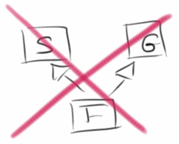
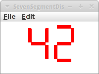
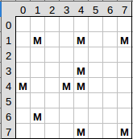
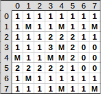

Asteroids
In diesem Kapitel gibt es wieder viele Spiele. Aber vorher müssen wir uns mit Objekt-Orientierung beschäftigen. Wir lernen die Grundpfeiler der Objekt-Orientierung kennen, nämlich Vererbung und Komposition. Wir werden auch Arrays kennenlernen, und wie man mit mehrdimensionalen Arrays Bilder manipuliert. Außerdem lernen wir wie man mit Tastaturereignissen (KeyEvents) arbeitet und die Klasse GCompound wird kurz vorgestellt. Wir beginnen mit den Arrays.
.
Arrays
Was sind Arrays? Ein Eierkarton ist ein Array. Und zwar ist es ein Array für zehn Eier. D.h. aber nicht dass da auch zehn Eier drin sind, manchmal sind nur drei Eier drin.
Offensichtlich sind also Arrays ganz praktisch und deswegen betrachten wir Arrays in Java. Nehmen wir einmal an wir wollten ein Array für zwölf Ganzzahlen anlegen, dann würden wir schreiben:
int[] eggs;
eggs = new int[10];
In der ersten Zeile deklarieren wir ein Array. Wir sagen dass es sich bei der Variablen eggs um ein Array vom Typ int handelt, indem wir hinter dem Datentyp einfach eckige Klammern schreiben. In der zweiten Zeile legen wir dann das Array an und sagen, dass es Platz für zehn int's geben soll.
Wir können Arrays von beliebigen Datentypen anlegen, z.B. könnten wir auch ein Array mit vier GOvals anlegen:
GOval[] circles = new GOval[4];
Alle Arrays haben zwei wichtige Eigenschaften:
- sie sind immer vom selben Datentyp, man sagt auch sie sind homogen, und
- sie sind geordnet, d.h., sie sind durchnummeriert beginnend mit 0.
.
Mit Arrays arbeiten
Nachdem wir ein Array deklariert und angelegt haben, müssen wir es mit Werten füllen. Das können wir von Hand machen:
eggs[0] = 0;
eggs[1] = 2;
eggs[2] = 4;
...
eggs[9] = 18;
Wir weisen also dem ersten Element im Array (dem Element Nummer 0) den Wert 0 zu, dem zweiten Element den Wert 2 usw. Wir können die Zuweisung aber auch mit einer Schleife machen:
for (int i=0; i<10; i++) {
eggs[i] = readInt("?");
}
oder mit dem folgende Trick (der allerdings nur beim Anlegen funktioniert):
int[] eggs = { 2, 4, 6, 8 };
Wenn wir auf ein Element zugreifen wollen, müssen wir seine Hausnummer angeben. Also auf das dritte Element greifen wir mit :
println( eggs[2] );
zu. Wenn wir alle Elemente ausgeben wollen, geht das am besten mit einer Schleife:
for (int i=0; i<eggs.length; i++) {
println( eggs[i] );
}
.
Übung: MonthName
Ein nützliches Beispiel ist die Konvertierung vom Monat als Zahl, also z.B. 12, in den Monatsnamen, also z.B. Dezember. Man könnte das mit einer langen if oder switch Bedingung machen, aber man kann das auch sehr elegant mit Arrays lösen:
public class MonthName extends ConsoleProgram {
private String[] monthName = { "January", "February", "March", "April",
"May", "June", "July", "August", "September", "October",
"November", "December" };
public void run() {
int monthNr = readInt("Enter number of month (1=January): ");
println(monthName[monthNr - 1]);
}
}
.
Array von Objekten
Im Prinzip sind Arrays nicht weiter kompliziert. Allerdings gibt es manchmal eine kleine Verwirrung wenn man Arrays von Objekten hat. Schauen wir uns dazu zunächst die Deklaration eines Arrays von GOvals an:
GOval[] circles = new GOval[4];
und vergleichen es mit dem Anlegen eines neuen Kreises:
GOval circle = new GOval(100,100,50,50);
Was ist der Unterschied? Im ersten Fall legen wir Platz für vier GOvals an. Wir legen aber noch keine Kreise selbst an. Im zweiten Fall dagegen legen wir einen Kreis an. Wenn wir also ein Array mit vier Kreisen anlegen wollen (und nicht nur Platz für vier Kreise), dann müssen wir ein bischen mehr Code schreiben:
GOval[] circles = new GOval[4]; circles[0] = new GOval(100, 66, 50, 50); circles[1] = new GOval(100, 116, 50, 50); circles[2] = new GOval(150, 66, 50, 50); circles[3] = new GOval(150, 116, 50, 50);
.
Mehrdimensionale Arrays
Eindimensionale Arrays sind ganz lustig und sparen uns viel Schreibarbeit. Aber wirklich cool sind zweidimensionale Arrays. Wir fangen ganz einfach mit einem Schachspiel an.
private char[][] chess = {
{ 'r', 'n', 'b', 'q', 'k', 'b', 'n', 'r' },
{ 'p', 'p', 'p', 'p', 'p', 'p', 'p', 'p' },
{ ' ', ' ', ' ', ' ', ' ', ' ', ' ', ' ' },
{ ' ', ' ', ' ', ' ', ' ', ' ', ' ', ' ' },
{ ' ', ' ', ' ', ' ', ' ', ' ', ' ', ' ' },
{ ' ', ' ', ' ', ' ', ' ', ' ', ' ', ' ' },
{ 'P', 'P', 'P', 'P', 'P', 'P', 'P', 'P' },
{ 'R', 'N', 'B', 'Q', 'K', 'B', 'N', 'R' } };
Es handelt sich hier also um ein 8 mal 8 Array von chars. Kleinbuchstaben stehen für schwarz, und Großbuchstaben für weiß. Wenn wir das Spielfeld ausgeben wollen, dann könnten wir das mit zwei verschachtelten for Schleifen tun:
private void printChessBoard() {
for (int i = 0; i < 8; i++) {
for (int j = 0; j < 8; j++) {
print(chess[i][j]);
}
println();
}
}
.
Taj Mahal, Bildquelle Wikipedia [1]
Übung: GrayImage
Bilder sind auch zweidimensionale Arrays. Als kleine Übung wollen wir ein Farbbild in ein Graubild umwandeln. Zunächst laden wir das Bild mittels der GImage Klasse:
GImage image = new GImage("Taj_Mahal_(Edited).jpeg");
Als nächstes müssen wir an die Pixel rankommen. Das geht mit der Methode getPixelArray() der Klasse GImage:
int[][] array = image.getPixelArray();
int height = array.length;
int width = array[0].length;
Diese liefert uns ein zweidimensionales Array von ints. Jeder dieser int entspricht einem Pixel. Wenn wir also den Pixel an Position x=5 und y=22 möchten, dann geht das mittels
int pixel = array[5][22];
Jeder dieser Pixel enthält dessen rot, grün und blau Werte, und mittels
int r = GImage.getRed(pixel); int g = GImage.getGreen(pixel); int b = GImage.getBlue(pixel);
erhalten wir diese. Um daraus ein Graubild zu erstellen, verwenden wir die Formel die auch Gimp verwendet [2]:
lum = 0.21 * r + 0.72 * g + 0.07 * b;
das packen wir dann wieder in das zweidimensionales Array
array[5][22] = GImage.createRGBPixel(lum, lum, lum);
und am Ende machen wir daraus ein neues GImage
GImage grayImage = new GImage(array);
.
Objekt-Orientierung
Im zweiten Teil dieses Kapitels wollen wir unsere Kenntnisse bzgl der Objektorientierung vertiefen. Die zwei großen Themen die anstehen sind zum einen Vererbung ("is a" Beziehung) und zum anderen Komposition ("has a" Beziehung). Wir beginnen mit einem kleinen Spiel, dem MarsLander.
.
Übung: MarsLander
Elon Musk will ja im kommenden Jahrzehnt die ersten Menschen auf den Mars schicken. Karel hat sich freiwillig gemeldet, und muss jetzt erst mal die Landung üben. Dazu gibt es einen Simulator den MarsLander. Es geht darum ein Raumschiff sicher auf dem Mars zu landen. Dazu können wir mit den Pfeiltasten (nach oben und nach unten) das Raumschiff abbremsen oder beschleunigen. Wenn unser Geschwindigkeit beim Touchdown zu hoch ist, sterben wir.
Der Top-Down Ansatz bietet sich an: Betrachten wir die run() Methode:
public void run() {
setup();
waitForClick();
// game loop
while (spaceShip != null) {
moveSpaceShip();
checkForCollision();
pause(DELAY);
}
displayGameOver();
}
Wie üblich fangen wir mit dem setup() an. Nach dem Setup warten wir bis der Nutzer mit der Maus einmal auf den Bildschirm klickt um das Spiel zu starten. Danach beginnt der GameLoop und der sieht genauso aus wie bei unserer letzten Animation, dem Billiard. Interessant ist jetzt, dass wir keine Endlosschleife mehr haben, sondern eine Schleife mit Abbruchkriterium: nämlich wenn es kein SpaceShip mehr gibt, also spaceShip == null, dann soll das Spiel aufhören.
Es gibt drei Instanzvariablen,
private GPolygon spaceShip;
private int vy = 0;
private int vx = 0;
also das spaceShip, sowie dessen Geschwindigkeiten vx und vy.
In der setup() Methode wird das spaceShip initialisiert, der Code ist identisch mit dem der Übung aus Kapitel zwei,
private void setup() {
spaceShip = new GPolygon();
spaceShip.addVertex(0, -SPACE_SHIP_SIZE);
spaceShip.addVertex(-2 * SPACE_SHIP_SIZE / 3, SPACE_SHIP_SIZE);
spaceShip.addVertex(0, SPACE_SHIP_SIZE / 2);
spaceShip.addVertex(2 * SPACE_SHIP_SIZE / 3, SPACE_SHIP_SIZE);
add(spaceShip, (getWidth() - SPACE_SHIP_SIZE) / 2, SPACE_SHIP_SIZE);
addKeyListeners();
}
und wir fügen einen KeyListener hinzu. Wir wollen das spaceShip ja mittels der Tastatur (keyboard) steuern, und deswegen müssen wir auf Tastenereignisse (KeyEvents) hören. Das ist also vollkommen analog zu den MouseEvents und dem MouseListener.
Die moveSpaceShip() Methode ist absolut trivial:
private void moveSpaceShip() {
vy += GRAVITY;
spaceShip.move(vx, vy);
}
Da wir uns im Schwerefeld (GRAVITY) des Mars befinden, erhöht sich unsere Geschwindigkeit in jedem Schritt. Und in jedem Schritt bewegen wir das spaceShip um den Betrag der Geschwindigkeit.
In der checkForCollision() Methode checken wir, ob wir schon auf der Marsoberfläche (also unten) angekommen sind:
private void checkForCollision() {
double y = spaceShip.getY();
if (y > (getHeight() - SPACE_SHIP_SIZE)) {
spaceShip = null;
}
}
Falls ja, dann setzen wir das spaceShip einfach auf null. "null" heißt soviel wie "nicht initialisiert" oder "existiert nicht" oder "gibt es nicht". Das ist ein vordefinierter Wert, den alle Objekte haben bevor sie mittels new erzeugt werden. Wir können aber auch Objekte explizit auf null setzen, und das bedeutet das wir das Objekt löschen. In unserem Beispiel verwenden wir das um die Endlosschleife zu beenden.
Was noch bleibt sind die Tastenereignisse. Ähnlich wie es bei der Maus die mousePressed() Methode gibt, gibt es auch eine keyPressed() Methode:
public void keyPressed(KeyEvent e) {
switch (e.getKeyCode()) {
case 38: // up
vy--;
break;
case 40: // down
vy++;
break;
}
}
Wir wollen natürlich wissen welche Taste gedrückt wurde und das erfahren wir von der getKeyCode() Methode de KeyEvents. Jede Taste hat ihren eigenen KeyCode, und für die Pfeil-Oben Taste ist das die 38 und für die Pfeil-Unten Taste ist das die 40.
So, jetzt können wir spielen, bzw. trainieren.
.
 Vererbung
Vererbung
Was hat der MarsLander mit Vererbung zu tun? Noch nicht viel. Aber schauen wir uns den Code an. Was uns ein bischen stören sollte sind die drei Zeilen,
private GPolygon spaceShip;
private int vy = 0;
private int vx = 0;
denn bei vx und vy handelt es sich um die Geschwindigkeit des spaceShip, die gehören also eigentlich zum spaceShip. Nehmen wir an wir hätten mehrere spaceShips, oder wir hätten ganz viele Asteroiden die sich durch die Gegend bewegen, dann hätten wir ganz viele vx's und vy's. Und das wird total unübersichtlich und häßlich.
Um das zu verhindern machen wir folgendes: wir deklarieren eine neue Klasse namens GSpaceShip und alles was mit spaceShip zu tun hat packen wir in diese Klasse:
public class GSpaceShip extends GPolygon { // constants private final int GRAVITY = 1; // instance variables public int vy = 0; public int vx = 0; public GSpaceShip(int SPACE_SHIP_SIZE) { super(); addVertex(0, -SPACE_SHIP_SIZE); addVertex(-2 * SPACE_SHIP_SIZE / 3, SPACE_SHIP_SIZE); addVertex(0, SPACE_SHIP_SIZE / 2); addVertex(2 * SPACE_SHIP_SIZE / 3, SPACE_SHIP_SIZE); } public void move() { vy += GRAVITY; move(vx, vy); } }
Als erstes sehen wir, dass es sich bei GSpaceShip um ein GPolygon handelt, denn es sagt "GSpaceShip extends GPolygon", also GSpaceShip ist ein GPolygon. GSpaceShip erbt also alle Eigenschaften und Methoden von GPolygon. Deswegen sagt man auch Vererbung ist eine "is a" Beziehung.
Als zweites sehen wir, dass die Instanzvariablen vx und vy jetzt Instanzvariablen des spaceShips sind, sie sind also da wo sie hingehören.
Als drittes schauen wir uns den Konstruktor an: dort sehen wir in der ersten Zeile ein "super()". Die Methode super() tut nichts anderes als den Konstrukter der Superklasse aufzurufen, also der Elternklasse. In unserem Fall ist das GPolygon(). Danach sehen wir, wie wir uns selbst (wir sind ja jetzt ein GPolygon) Vertices hinzufügen. D.h. im Konstruktor bestiimmen wir unser Aussehen.
Als letztes sehen wir, dass wir eine neue Methode namens move() hinzugefügt haben. Da GSpaceShip jetzt ja seine eigene Geschwindigkeit kennt, kann es sich ja auch selbst bewegen.
Vererbung hat also viele Vorzüge: vor allem führt sie dazu, dass Klassen selbstständiger werden, und weniger Abhängigkeiten haben. Man sagt auch die Klasse übernimmt Verantwortung über ihre eigenen Attribute (Variablen) und Verhalten (Methoden). Diese geringeren Abhängigkeiten führen auch zu einer geringeren Kopplung, die dazu führt, dass unser Code weniger kompliziert wird.
Schauen wir uns die Vereinfachungen im MarsLander2 an. Zunächst brauchen wir nur noch eine Instanzvariable:
private GSpaceShip spaceShip;
und außerdem werden die setup() und moveSpaceShip() Methoden viel kürzer:
private void setup() {
spaceShip = new GSpaceShip(SPACE_SHIP_SIZE);
add(spaceShip, (getWidth() - SPACE_SHIP_SIZE) / 2, SPACE_SHIP_SIZE);
addKeyListeners();
}
private void moveSpaceShip() {
spaceShip.move();
}
Das ist schon ziemlich cool. Den wahren Wert dieser Vereinfachungen werden wir aber erst schätzen lernen wenn es daran geht Asteroids zu programmieren.
.
Komposition
Das zweite wichtige Konzept der Objektorientierung ist die Komposition. Wie wir gesehen haben, kann man neue Klassen (GSpaceShip) durch Vererbung von einer existierenden Klasse (GPolygon) erzeugen. Man kann aber auch neue Klassen erzeugen, indem man sie aus mehreren existierenden Klassen zusammensetzt, also komposiert.
Als Beispiel schreiben wir eine Klasse GSmiley.
public class GSmiley {
public GSmiley(int SIZE) {
super();
GOval face = new GOval(SIZE, SIZE);
face.setFilled(true);
face.setFillColor(Color.YELLOW);
add(face);
GOval leftEye = new GOval(SIZE/10, SIZE/10);
leftEye.setColor(Color.GREEN);
add(leftEye, SIZE/4, SIZE/4);
GOval rightEye = new GOval(SIZE/10, SIZE/10);
rightEye.setColor(Color.RED);
add(rightEye, 3*SIZE/4, SIZE/4);
GArc mouth = new GArc(SIZE/2, SIZE/2, 225, 90);
add(mouth, 0.3*SIZE, 0.3*SIZE);
}
}
Unser GSmiley besteht aus verschiedenen Komponenten, es hat also ein face, ein leftEye, ein rightEye und ein mouth. Im Konstruktor basteln wir also ein neues Objekt aus mehreren alten. Das ist Komposition. Deswegen sagt man auch dass Komposition eine "has a" Beziehung ist, denn GSmiley hat ein face, ein leftEye, ein rightEye und ein mouth.
.
GCompound
Man kann Vererbung und Komposition auch mischen. Wenn wir beim GSmiley Beispiel noch "extends GCompound" zur Klassendeklaration hinzufügen, dann können wir GSmiley auch in unserem MarsLander verwenden. Wir müssen dann in der ersten Version des MarsLanders einfach "GPolygon" durch "GSmiley" ersetzen.
.
Vererbung vs Komposition
Wann verwendet man Vererbung und wann Komposition? Eine Daumenregel lautet, wenn möglich sollte man Komposition verwenden. Das hat damit zu tun, dass es in Java keine Mehrfachvererbung gibt. Also eine Klasse kann keine zwei Eltern haben. Diese Einschränkung gibt es bei Komposition nicht, im Prinzip kann eine Klasse aus beliebig vielen Komponenten bestehen.
.
 Eine kleine Anmerkung noch: mit Mehrfachvererbung meinen wir immer eine Klasse hat mehrere Elternklassen. Das ist nicht erlaubt. Es ist aber durchaus möglich dass eine Klasse eine Elternklasse hat, und diese Elternklasse hat wieder eine Elternklasse, also sozusagen die Großelternklasse der ursprünglichen. Also z.B. GObject ist die Großelternklasse der Klasse GSpaceShip. Das ist erlaubt.
Eine kleine Anmerkung noch: mit Mehrfachvererbung meinen wir immer eine Klasse hat mehrere Elternklassen. Das ist nicht erlaubt. Es ist aber durchaus möglich dass eine Klasse eine Elternklasse hat, und diese Elternklasse hat wieder eine Elternklasse, also sozusagen die Großelternklasse der ursprünglichen. Also z.B. GObject ist die Großelternklasse der Klasse GSpaceShip. Das ist erlaubt.
.
.
Review
Mit den Prinzipien Vererbung und Komposition haben wir den Kern der Objektorientierung erreicht und geknackt. Wir haben gelernt wie man einer existierenden Klasse mittel Vererbung zusätzlich Eigenschaften geben kann. So kann sich ein GPolygon nicht selbstständig bewegen, da es keine Geschwindigkeit hat. Die Klasse GSpaceShip, die ja eigentlich auch ein GPolygon ist, kennt aber seine eigene Geschwindigkeit, und kann sich selbstständig bewegen. Weiter haben wir gesehen, dass man mittels Komposition aus mehreren Klassen eine neue Klasse zusammenbauen kann. Beides ist sehr nützlich, wie wir sehen werden.
Zusätzlich haben wir noch ein paar andere nützliche Dinge, wie z.B.
- Arrays
- mehrdimensionale Arrays
- Bildverarbeitung
- Tastaturereignisse
- und die Klasse GCompound
kennengelernt.
.
Projekte
Die Projekte in diesem Kapitel fangen an richtig Spass zu machen. Los geht's.
.
PianoConsole
Als erste Anwendung für Arrays schreiben ein kleines Musikprogramm. In unserem Array speichern wir die Melodie:
private String[] tune = { "C", "D", "E", "F", "G", "G" };
Zum einfachen Abspielen von Audio-Dateien können wir die AudioClip Klasse verwenden:
AudioClip audioClip = getAudioClip(getCodeBase(), "sound.wav");
audioClip.play();
pause(500);
audioClip.stop();
Der AudioClip Klasse sagt man welche Datei sie abspielen soll, mit der Methode play() wird dann das Abspielen gestartet und mit stop() beendet. Wenn man jetzt für die verschiedenen Noten verschiedene wav-Dateien hat, also z.B. "C.wav", "D.wav", usw. dann kann man so Melodien abspielen, indem man mit einer Schleife die einzelnen Noten un dem tune Array durchiteriert.
.
Piano
Konsolenanwendungen sind immer etwas langweiliger, und ehrlich wer würde dafür schon Geld ausgeben? Wir haben aber ja schon im zweiten Semester eine UI für unser Piano geschrieben. Natürlich würde wir unser Klavier über die Maus steuern, also MouseListener im setup() hinzufügen.
Die Frage die sich allerdings stellt, wie wissen wir welche Taste gedrückt wurde? Interessanterweise können wir dafür unsere getElementAt() Methode verwenden:
public void mouseClicked(MouseEvent e) {
int x = e.getX();
int y = e.getY();
GObject obj = getElementAt(x, y);
if (obj != null) {
...
}
}
Darüber können wir also herausfinden, auf welches GRect gedrückt wurde. Jetzt gibt es drei Alternativen weiter zu machen:
- Wenn das GRect einen Namen hätte wäre die Welt ganz einfach. Wir können das mit Vererbung erreichen: wir definieren eine neue Klasse GKey, die ein GRect ist und noch zusätzlich ein Attribute für den Namen hat.
- Wir merken uns irgendwo die x-Koordinate der Tasten. Mit obj.getX() können wir diese ja erhalten, und viola wissen wir welche Taste gedrückt wurde.
- Oder wir halten uns Referenzen zu allen Tasten in einem Array.
Diese dritte Möglichkeit wollen wir kurz etwas näher betrachten. Dazu brauchen wir ein Array als Instanzvariable
private GRect[] keys = new GRect[12];
Wenn wir die Tasten erzeugen, dann speichern wir die einfach in unserem Instanzarray:
int keyCounter = 0;
// draw 8 white keys
for (int i = 0; i < 7; i++) {
keys[keyCounter] = new GRect(WIDTH / 7, HEIGHT - HEIGHT_OFFSET);
add(keys[keyCounter], i * WIDTH / 7, 0);
keyCounter++;
}
Und jetzt können wir in unserer mouseClicked() Methode einfach auf Gleichheit testen:
for (int i = 0; i < keys.length; i++) {
if (obj == keys[i]) {
AudioClip audioClip = getAudioClip(getCodeBase(), "music/"
+ tunes[i] + "4.wav");
println(tunes[i] + "4.wav");
audioClip.play();
}
}
Wenn wir jetzt die App auch noch auf dem Handy zum Laufen kriegen würden, dann wären wir reich! (Nächstes Jahr...)
.
Swap
In diesem Projekt wollen wir zwei Elemente eines Arrays vertauschen. In dem Array
int[] arr = { 0, 2, 4, 6 };
möchten wir das Element an der zweiten Position (also die "2") mit dem Element an der dritten Position (also der "3") vertauschen. Das wollen wir mit einer Methode swap(int[] arr) machen, die ein Array als Übergabeparameter hat.
Zwei Dinge wollen wir in dieser Übung lernen: Erstens in Arrays beginnen wir immer mit 0 zu zählen, und Arrays werden als Referenz übergeben, d.h., wenn wir ein Array als Übergabeparameter an eine Methode übergeben, dann wir dieses im Original übergeben. Alle Änderungen die wir in der Methode daran vornehmen sind permanent, also ändern das Array.
.
ExamStatistics
Als weiteres Beispiel für eine Anwendung von Arrays wollen wir ein paar statistische Daten zu den Punkten in einer Klausur ermitteln. Zusätzlich wollen wir die Punkte in einem Array speichern. Da wir noch nicht genau wissen wieviele Studierende an der Klausur teilnehmen, es aber sehr unwahrscheinlich ist, dass es mehr als 100 sind, legen wir eine Array für 100 Noten an:
int[] scores = new int[MAX_SIZE];
Wir bitten den Nutzer die Noten einzugeben. Dafür können wir wieder den Loop-and-a-Half verwenden. Damit wir wissen wann wir fertig sind, vereinbaren wir, dass die Eingabe der "-1" (dem Sentinel) bedeutet, dass alle Noten eingegeben wurden. Das ist also unser Abbruchkriterium.
Die statistischen Daten die wir ermittlen wollen sind: Anzahl der Klausuren, der Durchschnitt, die niedrigste Punktzahl und die höchste Punktzahl.
.
FlippedImage
Arrays sind bestens geeignet um mit Bilder zu arbeiten. Wir haben ja oben schon gesehen wie wir auf die Pixel zugreifen können. In diesem Beispiel wollen wir ein gegebenes Bild spiegeln. Das kann horizontal oder vertikal sein. Dazu kreiiren wir ein neues Array
int[][] arrayFlipped = new int[height][width];
und verwenden zwei verschachtelte Schleifen
for (int i = 0; i < height; i++) {
for (int j = 0; j < width; j++) {
int pixel = array[i][j];
arrayFlipped[height - i - 1][j] = pixel;
}
}
und die Pixel zu tauschen. Aus dem neuen Array machen wir dann ein neues Bild via
GImage flippedImage = new GImage(arrayFlipped);
.
GrayImageXOR
Die Steganographie ist die Kunst der verborgenen Übermittlung von Informationen [3]. Interessant ist, dass man das ganz einfach mit der XOR Funktion, also dem Exkulsiven Oder, machen kann. Wie machen wir das? Nehmen wir an wir haben zwei Bilder und deren Pixel Arrays:
int pixel1 = array1[i][j];
int pixel2 = array2[i][j];
dann holen wir uns jeweils z.B. den Rot-Wert:
int r1 = GImage.getRed(pixel1);
int r2 = GImage.getRed(pixel2);
und genauso wie wir diese beide Werte z.B. addieren könnten, können wir auch die XOR Funktion '^' anwenden:
int xx = r1 ^ r2;
also, wir machen ein bitweises XOR der Bits von r1 mit denen von r2. Wenn wir als Bild-Beispiele das Taj und die Mona Lisa nehmen, dann kommt da eine lustige Mischung heraus auf der man weder das eine noch das andere erkennen kann. Interessant wird es wenn wir die Pixel dieses Mischlingwerkes nehmen und nochmal die XOR Funktion darüber laufen lassen: dann kommt nämlich wieder das ursprüngliche Bild zum Vorschein. Interessanterweise genau das Gegenstück.
Auf dem gleich Prinzip basiert auch das RAID-5 System das für die Ausfallsicherheit von Festplatten sorgt [4].
.
 ColorImage
ColorImage
Eine häufige Anwendung der Bildmanipulation ist die Reduzierung der Farben in einem Bild. Das ist eine schöne Anwendung für die Ganzzahl Division (Integer Division).
int r = GImage.getRed(pixel);
r = (r / FACTOR) * FACTOR;
Ursprünglich kann r ja Werte zwischen 0 und 255 annehmen. Wenn wir diese Zahl durch z.B. 64 teilen, dann haben wir nur noch Werte zwischen 0 und 3. Multiplizieren wir das wieder mit 64, so haben wir nur noch die Werte 0, 64, 128 und 192. Also es gibt nur noch vier Rotwerte.
.
 ImageFilterSimple
ImageFilterSimple
Man kann auch viele andere Bildmanipulationen vornehmen. Z.B. kann man benachbarte Pixel einfach subtrahieren:
int r01 = GImage.getRed(array[i][j - 1]);
int r11 = GImage.getRed(array[i][j]);
// difference
int xx = r11 - r01;
xx *= 10;
edge[i][j] = GImage.createRGBPixel(xx, xx, xx);
Das Resultat entspricht einer einfachen Kantenerkennung.
.
ImageFilterMatrix
Viel interessantere Bildmanipulationen werden auf einmal möglich wenn man sich bewusst wird, dass Arrays eigentlich Matrizen sind. Das darf man nicht so laut sagen, sonst wird man verbrannt [6]. Aber wenn man das weiß, dann kann man ganz coole Sachen mit Bildern machen. Bei den Filtern sharpen, blur, edgeEnhance, edgeDetect, oder emboss wie sie aus jedem Bildbearbeitungsprogramm bekannt sind, handelt es sich eigentlich nur um die Anwendung einer Faltungsmatrix [5]. Z.B. sieht die Matrix um ein Bild schärfer zu machen folgendermaßen aus:
private int[][] currentFilter = {
{ 0, -1, 0 },
{ -1, 5, -1 },
{ 0, -1, 0 }
};
Das Ausführen der Matrixmultiplikation (also der Anwendung des Filters auf das Bild) erledigt dann folgende Methode:
// int alpha = (color >> 32) & 0xFF;
// int red = (color >> 16) & 0xFF;
// int green = (color >> 8) & 0xFF;
// int blue = color & 0xFF;
private int applyFilterToPixel(int x, int y) {
int r = 0;
int g = 0;
int b = 0;
for (int i = 0; i <= 2; i++) {
for (int j = 0; j <= 2; j++) {
r += ((array[x + i][y + j] >> 16) & 0xFF) * currentFilter[j][i];
g += ((array[x + i][y + j] >> 8) & 0xFF) * currentFilter[j][i];
b += ((array[x + i][y + j]) & 0xFF) * currentFilter[j][i];
}
}
return GImage.createRGBPixel(checkBounds(r / currentFactor), checkBounds(g
/ currentFactor), checkBounds(b / currentFactor));
}
die man für jeden Pixel des Ursprungsbildes aufrufen muss. Das Beispiel ist auch deswegen interessant weil man mal eine praktische Anwendung des Rechtsverschiebungs Operators ">>" (right shift) und des bitweisen Und Operators "&" sieht.
.
Calculator
Die Anwendungen für Arrays sind wirklich vielfältig. Sehr häufig helfen sie einem ganz viel Code einzusparen. Ein schönes Beispiel ist der Calculator aus dem letzten Kapitel. Man kann natürlich die Knöpfe, also JButtons, alle einzeln erzeugen, man kann das aber auch effektiver machen:
private final String[] btnNames = { "7", "8", "9", "/", "4", "5", "6", "*",
"1", "2", "3", "-", ".", "0", "=", "+" };
public void init() {
...
setLayout(new GridLayout(4, 4));
for (int i = 0; i < btnNames.length; i++) {
JButton btn = new JButton(btnNames[i]);
add(btn);
}
...
}
.
TicTacToeLogic
Arrays können auch für Spiele ganz nützlich sein. Im vierten Kapitel haben wir ja schon die UI für das TicTacToe Spiel geschrieben. Jetzt sind wir soweit auch den Logik Teil zu verstehen. Das Spielfeld kann man nämlich als zwei-dimensionales Array auffassen:
private int[][] board = new int[3][3];
Ursprünglich sind alle Werte des Spielfelds auf 0 gesetzt. Wenn wir jetzt die Felder die Spieler eins besetzt hat mit einer 1 markieren und die die Spieler zwei besetzt hat mit einer 2 markieren, dann ist das eine perfekte Beschreibung des jeweiligen Spielstandes.
Wenn wir jetzt testen wollen ob ein bestimmter Zug erlaubt ist, dann müssen wir lediglich testen ob der Werte des Spielfelds an der Stelle 0 ist:
public boolean isMoveAllowed(int player, int i, int j) {
if (board[i][j] == 0) {
board[i][j] = player;
return true;
}
return false;
}
Wenn wir testen wollen ob ein Spieler gewonnen hat, dann müssen wir nachsehen, ob einer der Spieler eine vertikale, horizontale oder diagonale Reihe besetzt hat. Für die vertikale Reihe könnte man das so testen:
private boolean checkVerticals() {
// player 1
for (int i = 0; i < 3; i++) {
if ((board[i][0] == 1) && (board[i][1] == 1) && (board[i][2] == 1)) {
return true;
}
}
// player 2
for (int i = 0; i < 3; i++) {
if ((board[i][0] == 2) && (board[i][1] == 2) && (board[i][2] == 2)) {
return true;
}
}
return false;
}
Wir gehen einfach eine Reihe nach der anderen durch (for Schleife) und schauen ob alle drei Werte auf 1 (für Spieler 1) oder 2 (für Spieler 2) gesetzt sind.
.
BattleShip
Schiffe versenken [7] ist auch ein Spieleklassiker für dessen Umsetzung Arrays sehr nützlich sind. Unser BattleShip Spiel soll ein Spiel Mensch gegen Computer werden, soll heißen der Computer verteilt seine Schiffchen und wir müssen sie finden.
Genauso wie bei TicTacToe verwenden wir für das Spielfeld ein Array von Ganzzahlen:
private int[][] board = new int[BOARD_SIZE][BOARD_SIZE];
Die Schiffe selbst werden durch Zahlen repräsentiert: 5 steht für einen AircraftCarrier, 4 für ein Battleship, 3 für ein Submarine oder einen Destroyer und 2 für ein PatrolBoat. Um festzulegen wieviele es von jeder Schiffsart gibt, können wir auch wieder ein Array verwenden:
private final int[] SHIP_SIZES = { 5, 4, 3, 3, 2 };
D.h., wenn wir noch ein paar PatrolBoat haben möchten, dann fügen einfach noch ein paar 2er ein.
In der setup() Methode
private void setup() {
drawLines();
initBoard();
addMouseListeners();
}
zeichnen wir das Spielfeld, intialisieren die Boote, und fügen einen MouseListener hinzu. In der initBoard() Methode gehen wir einfach durch die Liste von Schiffen (SHIP_SIZES) und fügen eines nach dem anderen mittels der Methode placeShip(int shipNr, int shipSize) dem Spielfeld hinzu. Diese Methode kann ganz einfach sein, wenn man die Schiffe einfach nebeneinander plaziert, dann wird das Spiel aber ganz einfach, oder sie kann auch sehr kompliziert werden, wenn die Schiffe zufällig verteilt sein sollen. Für uns genügt die einfache Version.
Bleibt nur noch die mousePressed() Methode zu implementieren. Wir verwenden wieder unseren Trick mit der Ganzzahl Division:
public void mousePressed(MouseEvent e) {
int i = e.getX() / STEP;
int j = e.getY() / STEP;
showLabelAt(i, j);
}
und es bleibt die showLabelAt(int i, int j) Methode zu implementieren. Diese schaut im board Array nach ob an der Stelle ein Schiff ist:
GLabel lbl = new GLabel("" + board[i][j]);
if (board[i][j] == 0) {
lbl = new GLabel(".");
}
Das ist wieder ein fieser Trick mit dem man sich ein paar unnötige Zeilen Code sparen kann. Den Label zeichnen wir dann einfach an der Position wo die Maus geklickt wurde. Und das wars.
.
CityAtNight
Wiederverwendung ist ein ganz zentrales Konzept der Objektorientierung. Das kann man sowohl mit Vererbung als auch mit Komposition erreichen. Wir beginnen mit einem Beispiel zur Komposition. Erinnern wir uns an Kapitel 2, dort haben wir einen Skyscraper programmiert. Wenn wir jetzt eine ganze Stadt zeichnen möchten, dann wäre es ganz praktisch wenn wir unsere Skyscraper wiederverwenden könnten:
public class CityAtNight extends GraphicsProgram {
private RandomGenerator rgen = new RandomGenerator();
public void run() {
for (int i = 0; i < 8; i++) {
int cols = rgen.nextInt(4, 6);
int rows = rgen.nextInt(4, 8);
GSkyscraper h = new GSkyscraper(rows, cols);
int x = rgen.nextInt(0, getWidth() - 40);
int y = rgen.nextInt(getHeight() / 4, getHeight()/2);
add(h, x, y);
}
}
}
Also bräuchten wir eine Klasse GSkyscraper die einen Skyscraper zeichnet. Da ein Skyscraper aus mehreren GRects besteht macht es Sinn, ähnlich wie beim GSmiley, das Ganze als GCompound aufzuziehen:
public class GSkyscraper extends GCompound {
...
}
Wie bei jeder Klasse benötigen wir einen Konstruktor
public GSkyscraper(int rows, int cols) {
...
}
in dem wir die Anzahl der Fensterreihen und -spalten übergeben. Je nachdem ob alle Skyscrapers gleich aussehen sollen oder unterschiedlich muss man dann noch etwas Zufall in die addWindow() Methode einfließen lassen.
.
SevenSegmentDisplay
Ein weiteres schönes Beispiel für Wiederverwendung mittels Komposition ist die Siebensegmentanzeige. Erinnern wir uns an Kapitel 2, dort haben wir eine Siebensegmentanzeige programmiert. Wenn wir jetzt mehrere dieser Siebensegmentanzeigen benötigen, z.B. für einen Zähler, einen Taschenrechner oder ein Uhr, dann wäre es praktisch wenn es eine Klasse SevenSegmentDisplay geben würde, die wir einfach mehrmals verwenden könnten, ähnlich einem GRect.
Da eine Siebensegmentanzeige aus mehreren GRects besteht macht es Sinn, ähnlich wie beim GSmiley, das Ganze als GCompound aufzuziehen:
public class SevenSegmentDisplay extends GCompound {
...
}
Wie bei jeder Klasse benötigen wir einen Konstruktor
public SevenSegmentDisplay(int width, int height, int ledWidth) {
...
}
in dem wir idealerweise die Breite und Höhe der Anzeige, sowie die Breite der LEDs vorgeben. Der Konstruktor sollte dann das Display aus GRects konstuieren.
Wirklich praktisch wäre dann noch eine displayNumber(char c) Methode,
public void displayNumber(char c) {
turnAllSegmentsOff();
switch (c) {
case '0':
int[] code0 = { 1, 1, 1, 1, 1, 0, 1 };
turnSegmentsOn(code0);
break;
case '1':
...
}
}
der man einfach eine Ziffer übergibt, und die diese dann anzeigt. Die turnSegmentsOn() Methode könnte wie folgt aussehen:
private void turnSegmentsOn(int[] code) {
if (code[0] == 1) {
upperFrontVertical.setColor(colorOn);
}
...
}
Das SevenSegmentDisplay kann man dann ganz einfach in einem GraphicsProgram verwenden:
public class SevenSegmentDisplayProgram extends GraphicsProgram {
public void run() {
SevenSegmentDisplay ssd1 = new SevenSegmentDisplay(40, 80, 6);
add(ssd1);
ssd1.displayNumber('5');
}
}
Erweiterung: Anstelle des JTextField könnte man auch das SevenSegmentDisplay für den Calculator verwenden.
.
BirdFlocking
Schwarmverhalten lässt sich bei Fischen, Vögeln und vielen anderen Tieren beobachten. Interessanterweise lässt sich Schwarmverhalten relativ einfach simulieren, die Individuen im Schwarm (auch Boids genannt) müssen lediglich drei einfache Regeln befolgen [11]:
- Separation: halte Abstand von Deinen Nachbarn wenn Du ihnen zu nahe kommst (short range repulsion)
- Alignment: bewege Dich grob in die Richtung Deiner Nachbarn
- Cohesion: bewege Dich grob auf den gemeinsamen Mittelpunkt Deiner Nachbarn zu (long range attraction)
Die Simulation ist ähnlich wie im Planets Projekt, mit dem feinen Unterschied, dass anstelle von Newton's Schwerkraft, die Boid-Regeln gelten.
.
 GameOfLife
GameOfLife
Das größte Genie des letzten Jahrhunderts, John von Neumann, versuchte eine hypothetische Maschine zu konstruieren, die Kopien von sich selbst anfertigen konnte. Dies gelang ihm auch, allerdings hatte das mathematische Modell seiner Maschine sehr komplizierte Regeln. Dem britischen Mathematiker John Horton Conway gelang es anfang der 70er von Neumanns Ideen drastisch zu vereinfachen, heute bekannt unter dem Namen Conway's Game of Life [8].
Das Universum des Spiel des Lebens ist ein zweidimensionales Gitter aus quadratischen Zellen (GRects), von denen jede in einer von zwei möglichen Zuständen sein kann: lebend (schwarz) oder tot (weiß). Jede Zelle hat acht Nachbarn, und abhängig vom Zustand der Nachbarn entscheidet sich der eigene Zustand in der nächsten Runde nach folgenden Regeln:
- jede lebende Zelle mit weniger als zwei lebenden Nachbarn stirbt (Unter-Bevölkerung)
- jede lebende Zelle mit zwei oder drei lebenden Nachbarn lebt
- jede lebende Zelle mit mehr als drei lebenden Nachbarn stirbt (Über-Bevölkerung)
- jede tote Zelle mit genau drei lebenden Nachbarn wird eine lebende Zelle (Fortpflanzung)
.
Mandelbrot
Die Apfelmännchen sind nach dem französischen Mathematiker Benoît Mandelbrot benannt. Es handelt sich dabei um sogenannte Fraktale, aber die meisten Leute finden sie einfach nur hübsch [9].
Die mathematische Gleichung die hinter der Mandelbrot Menge liegt ist sehr einfach:
z_n+1 = z_n * z_n + c
dabei sind z und c komplexe Zahlen. Es handelt sich hier um eine Iteration, d.h. wenn wir z_n kennen, dann können wir z_n+1 ausrechnen. Die Anfangsbedingungen lauten, dass z_0 gleich null sein soll und c ist der Punkt in der komplexen Ebene für den die Farbe ausgerechnet werden soll. Also wenn wir in x- und y-Koordinaten denken, dann ist
c = x + i y
die Anfangsbedingung. Alles was noch nötig ist, ist das Abbruchkriterium, wann sollen wir mit der Iteration aufhören? Entweder wenn z*z >= 4 ist oder wenn die Anzahl der Iterationen größer als ein maximal Wert ist:
while ( (x*x + y*y < 4) && (iteration < max_iteration) ) {
...
iteration++;
}
Damit das Ganze dann hübsch aussieht, nehmen wir die Anzahl der Iterationen und kodieren sie in Farbe:
int color = RAINBOW_COLORS[iteration % RAINBOW_NR_OF_COLORS];
Dabei ist RAINBOW_COLORS ein Farbarray, das wir beliebig initialisieren können. Zu guter Letzt brauchen wir noch eine setPixel() Methode, die es in der ACM Graphics Bibliothek eigentlich gar nicht gibt. Wir behelfen uns damit, dass wir kleine GRects zeichnen:
private void setPixel(double x, double y, Color color) {
int i = (int) (((x - xMin) * WIDTH) / (xMax - xMin));
int j = (int) (((y - yMin) * HEIGHT) / (yMax - yMin));
GRect r = new GRect(1, 1);
r.setColor(color);
add(r, i, j);
}
Das ist nicht gerade die schnellst und effektivste Art, aber sie funktioniert.
.
Challenges
.
Planets
Ein schönes Beispiel für Wiederverwendung mittels Vererbung ist eine kleine Simulation des Sonne-Erde-Mond Systems. Visuell gesehen, sind Planeten nichts anderes als GOvals. Aber Planeten bewegen sich, d.h. sie haben eine Geschwindigkeit. GOvals haben aber keine Geschwindigkeit. Wir brauchen also ein GOval mit Geschwindigkeit. Genau das ist was Vererbung für uns tun kann:
class GPlanet extends GOval {
public double vx;
public double vy;
public GPlanet(int size) {
super(size, size);
}
public void move() {
move(vx, vy);
}
}
GPlanet ist also ein GOval, hat aber zusätzlich noch eine Geschwindigkeit vx und vy. Im Konstruktor rufen wir einfach den Konstruktor der Superklasse auf, also den Konstruktor von GOval, und der erzeugt ein GOval mit gegebener Höhe und Breite. Ansonsten benötigen wir lediglich eine move() Methode um unseren Planeten zu bewegen.
In unserem Planets GraphicsProgram wollen wir jetzt im setup() drei Planeten erzeugen, also
private void setup() {
// create sun
sun = new GPlanet(SUN_MASS);
sun.setFilled(true);
sun.setColor(Color.YELLOW);
sun.vy = SUN_SPEED;
add(sun, (SIZE - SUN_MASS) / 2, (SIZE - SUN_MASS) / 2);
// create earth
...
// create earth
...
}
Wir setzen hier den Radius der Sonne gleich der Masse der Sonne. Das ist nicht ganz richtig, für die Simulation aber nicht weiter schlimm. Als nächstes betrachten wir den GameLoop:
while (true) {
sun.move();
earth.move();
moon.move();
calculateNewVelocities(sun, earth);
calculateNewVelocities(sun, moon);
calculateNewVelocities(earth, moon);
pause(DELAY);
}
Wie üblich im GameLoop, bewegen wir erst die einzelnen Planeten und danach berechnen wir die neuen Geschwindigkeiten. Die Methode calculateNewVelocities() sieht etwas kompliziert aus, ist aber nichts anderes als Newton's Gravitationsgesetz.
An diesem Beispiel sieht man sehr schön, dass Simulationen nicht ganz einfach sind: denn nach der zweiten Umkreisung um die Sonne, verläßt uns unser Mond auf Nimmer-Wiedersehen... Schade.
.
 AngryCanon
AngryCanon
Unser erstes Projekt das mit Tastatur Events arbeitet wurde von einem populären Spiel mit Vögeln und Schweinen inspiriert. Wie üblich müssen wir die Dinge etwas vereinfachen. Das Ziel ist ein blaues GRect, das wir mit einer Kugel (grünes GOval) treffen sollen. Geschossen wird die Kugel von einer Kanone.
Das schwierigste an diesem Spiel ist die Kanone: denn wir möchten, dass wir ihre Richtung ändern können, dass wir sie drehen können. Es stellt sich heraus, dass nur das GPolygon in der ACM Graphics Library diese Funktionalität bietet, nämlich eine rotate() Methode. Wir basteln unsere Kanone, also das Rohr, aus einem GPolygon. Damit das ganze dann hübsch aussieht verstecken wir die "Mechanik" der Kanone hinter einem roten GOval.
In der setup() Methode also basteln wir die Kanone, das Ziel ein blaues Rechteck, und wir fügen noch den KeyListener hinzu.
Als nächstes schreiben wir die keyPressed() Methode: dort wollen wir abhängig vom KeyCode, die Kanone entweder nach links oder rechts drehen,
public void keyPressed(KeyEvent e) {
int code = e.getKeyCode();
switch (code) {
case 37:
angle += 5;
canon.rotate(5);
break;
case 39:
angle -= 5;
canon.rotate(-5);
break;
case 32:
fireBullet();
break;
}
}
oder wenn der Spieler auf die Leertaste drückt wollen wir die Kugel abfeuern. Wir benötigen den Winkel angle als Instanzvariable, damit wir beim Abfeuern die Anfangsgeschwindigkeiten der Kugel setzen können:
private void fireBullet() {
if (bullet == null) {
vx = -Math.sin(Math.toRadians(angle)) * BULLET_SPEED;
vy = -Math.cos(Math.toRadians(angle)) * BULLET_SPEED;
bullet = new GOval(BULLET_SIZE, BULLET_SIZE);
...
}
}
Die Bewegung der Kugel selbst wird dann im GameLoop berechnet:
while (true) {
if (bullet != null) {
moveBullet();
collisionWithWalls();
collisionWithTarget();
}
pause(DELAY);
}
In moveBullet() wollen wir die Kugel bewegen und wir müssen die Schwerkraft wirken lassen:
private void moveBullet() {
bullet.move(vx, vy);
vy += GRAVITY;
}
Kommt es zu Kollisionen mit der Wand (also oben, rechts, links oder unten) dann verschwindet die Kugel einfach:
remove(bullet);
bullet = null;
Kommt es zu Kollisionen mit dem blauen Rechteck, dann verschwindet die Kugel, das Rechteck und das Spiel ist vorbei.
.
FlappyBall
Auch unser nächstes Projekt ist wieder von einem Spiel mit einem Vogel inspiriert: Allerdings ist unser Vogel ein GOval. Wir können den Vogel mit der Tastatur steuern, genauer der Leertaste. Und der Vogel muss durch ein Hindernis durchfliegen, zwei sich bewegende GRects.
Für das Spiel benötigen wir also einen Vogel (ball) und eine zweigeteilte Wand als Instanzvariablen:
private GOval ball;
private GRect upperWall;
private GRect lowerWall;
Im setup() initialisieren wir diese: Der Ball kommt einfach in die Mitte, und die beiden Rechtecke an den rechten Rand. Die Höhe des Spalts sollte zufällig sein, die Breite des Spalts sollte aber zweimal der Durchmesser des Balls sein. Und natürlich nicht vergessen den KeyListener hinzuzufügen.
Folgt der GameLoop:
while (alive) {
moveBall();
moveWall();
checkForCollision();
pause(DELAY);
}
Der Ball bewegt sich nur nach oben oder unten. Normalerweise wirkt die Schwerkraft auf ihn, deswegen fällt er normalerweise nach unten. Die Wand bewegt sich mit konstanter Geschwindigkeit von rechts nach links. Wenn sie den linken Bildschirmrand erreicht verschwindet sie einfach, und eine neue Wand erscheint am rechten Rand.
Was Kollisionen angeht, müssen wir zum einen nach Kollisionen mit der Wand checken: falls es da eine gibt, ist das Spiel vorbei. Bei Kollisionen mit dem Boden, macht es Sinn die Ball-Geschwindigkeit einfach auf 0 zu setzen, und den Ball einfach unten am Bildschirm zu positionieren.
Bleibt noch zu überlegen, was zu tun ist, wenn die Leertaste gedrückt wird? Das ist überraschend einfach:
public void keyTyped(KeyEvent e) {
ballVel = -5.0;
}
.
SpeedRace
Die erste Version von Speed Race erschien im Jahr 1974 geschrieben von Tomohiro Nishikado, dem Autor von Space Invaders [10]. Es handelt sich salopp gesagt um GTA 0.1, also ein Autorennspiel der ersten Generation. Interessant daran ist wie einfach sich das Gehirn doch überlisten lässt: einfach ein paar weiße Rechtecke die sich von oben nach unten bewegen, schon glaubt man auf einer Straße zu fahren!
Effektiv besteht das Spiel aus einer ganzen Menge Rechtecke. Das erste ist die Straße: die besteht aus zwei Teilen: einem großen schwarzes Rechteck das gar nichts macht und dem Mittelstreifen (middleLane) der aus mehreren (5) weißen Rechtecken besteht, die sich mit konstanter Geschwindigkeit von oben nach unten bewegen.
Es folgt das eigene Auto (car): ein rotes Rechteck, dass sich nur nach links und rechts steuern lässt. Und schließlich die anderen Autos (otherCars), bei denen es sich auch nur um farbige Rechtecke handelt, die sich auch von oben nach unten durch den Bidlschirm bewegen. Im setup() werden wie üblich die ganzen Rechtecke angelegt und der KeyListener hinzugefügt.
Der Code für den GameLoop hält sich auch in Grenzen:
while (true) {
moveRoad();
moveCars();
checkForCollisionCarsWithWall();
pause(DELAY);
}
Als erstes bewegen wir die Stráße. Das ist eigentlich total trivial, wenn wir uns an unseren Freund den Remainder Operator (%) erinnern:
private void moveRoad() {
for (int i = 0; i < NR_OF_LANES; i++) {
middleLane[i].move(0, CAR_SPEED);
double x = middleLane[i].getX();
double y = middleLane[i].getY() + LANE_LENGTH;
middleLane[i].setLocation(x, y % SIZE - LANE_LENGTH);
}
}
if-else war gestern. Noch einfacher ist moveCars(), wir bewegen einfach ein Auto nach dem andern. In checkForCollisionCarsWithWall() wollen wir eigentlich nur feststellen ob eines der otherCars den Bildschirm unten verlassen hat: dann schicken wir es einfach oben wieder auf die Reise, allerdings an einer anderen, zufälligen x-Posiiton.
Bleibt noch die keyPressed() Methode: wenn der Spieler auf die linke Pfeiltaste drückt (keyCode = 37), dann bewegen wir das Auto (car) einfach um 5 Pixel nach links, wenn er auf die rechte Pfeiltaste drückt (keyCode = 39), nach rechts um 5 Pixel. Hätte komplizierter sein können.
.
GeometryRun
Viele von uns haben einen bleibenden Schaden vom Matheunterricht in der Schule davon getragen, deswegen vermeiden wir geometrische Objekte wie die Pest. In diesem Spiel geht es darum, dass wir (ein grünes GOval) unter allen Umständen es vermeiden müssen (mit der Leertaste) mit den ankommenden geometrischen Objekten (GRects) zu kollidieren.
Wie üblich überlegen wir uns zunächst welche Instanzvariablen nötig sind:
private GeometryObstacle[] obstacles;
private Geometry runner;
Bei der Geometry Klasse handelt es sich einfach um ein GOval, bei der GeometryObstacle um ein GRect. Beide haben aber noch zusätzlich eine Geschwindigkeit:
public class Geometry extends GOval implements GeometryConstants { public int vx = 0; public int vy = 0; public Geometry() { super(DASH_SIZE, DASH_SIZE); } public void move() { this.move(vx, vy); } }
Das mit extends haben wir ja schon gesehen, neu ist das implements. In diesem Projekt haben wir drei Klassen: GeometryRun, Geometry und GeometryObstacle. Alle drei haben Konstanten, und teilweise die gleichen Konstanten. Damit wir die aber nicht doppelt und dreifach schreiben müssen, fassen wir einfach alle Konstanten in ein Interface zusammen:
public interface GeometryConstants {
public final int APP_WIDTH = 400;
public final int APP_HEIGHT = 200;
public final int GRAVITY = 2;
public final int DELAY = 50;
public final int NR_OF_OBSTACLES = 3;
public final int OBSTACLES_SIZE = 40;
public final int OBSTACLES_SPEED = 5;
public final int DASH_SIZE = 30;
public final int DASH_JUMP = 20;
public final int DASH_X_POS = APP_WIDTH / 2;
public final int DASH_Y_POS = APP_HEIGHT - 2 * OBSTACLES_SIZE;
}
Und damit wir die Konstanten benutzen können müssen wir einfach "implements GeometryConstants" an die Klassendeklaration anhängen.
Machen wir weiter mit unserem Spiel, wir beginnen mit dem setup(): wir initialisieren den runner und die obstacles. Den runner plazieren wir in die Mitte, die obstacles plazieren wir unten am Bildschirm, an zufälligen x-Positionen. Und den KeyListener dürfen wir nicht vergessen.
Der GameLoop ist wieder ganz einfach:
while (true) {
moveObstacles();
moveDash();
checkForCollision();
pause(DELAY);
}
Die obstacles bewegen sich mit konstanter Geschwindigkeit von rechts nach links, und auf den runner wirkt nur die Schwerkraft. Die checkForCollision() Methode muss einmal dafür sorgen, dass obstacles die links verschwinden rechts wieder erscheinen, und sollte Kollision zwischen unserem runner und den obstacles erkennen.
Bleibt noch die keyPressed() Methode: wann immer die Leertaste gedrückt wird, soll die y-Geschwindigkeit des runners einen kleinen Stups erhalten:
runner.vy -= DASH_JUMP;
.
JumpAndRun
GeometryRun ist eigentlich ein typisches Jump-and-Run Spiel. Donkey Kong [13] war eines der ersten bekannten Spiele dieses Genres, das im Englischen auch unter dem Begriff "Platform Game" bekannt ist [12]. Was Jump-and-Run Spiele ausmacht ist zum einen, dass es verschiedene Objekte gibt, und zum anderen, dass es verschiedene Levels gibt.
In unserem JumpAndRun Projekt haben wir deshalb folgende Instanzvariablen:
private GOval ball;
private GObject[] movingObject = new GObject[12];
Wir haben also einen ball für den Spieler und die movingObjects ein Array von GObjects. D.h. das könnten GOval, GRects, oder jedes andere GObject sein. Um welches GObject es sich handeln soll, bestimmen wir mit dem String world:
private String world = " RRRR O RO OOO R";
Wenn in dem String ein 'R' steht, soll an der Stelle ein GRect erzeugt werden, für ein 'O' ein GOval, und ansonsten nichts. D.h. mit verschiedenen world Strings können wir verschiedene Levels beschreiben. Und ein Level Editor würde nichts anderes machen als diesen String zu editieren.
Was macht die setup() Methode? Sie erzeugt den ball, fügt den KeyListener hinzu und erzeugt die Welt:
private void createNewObjects() {
for (int i = 0; i < movingObject.length; i++) {
switch (world.charAt(i)) {
case 'R':
GRect rect = new GRect(WIDTH + i * BALL_DIAM, Y_START, BALL_DIAM, BALL_DIAM);
rect.setColor(rgen.nextColor());
rect.setFilled(true);
rect.setFillColor(rgen.nextColor());
movingObject[i] = rect;
add(movingObject[i]);
break;
case 'O':
...
default:
movingObject[i] = null;
break;
}
}
}
Der GameLoop ist identisch zum letzten Projekt. Was etwas anders ist, ist die checkForCollisionWithObjects() Methode:
private void checkForCollisionWithObjects() {
GObject obj = getElementAt(ball.getX() + BALL_DIAM / 2, ball.getY()
+ BALL_DIAM + 1);
if ((obj != null)) {
if (obj instanceof GRect) {
ballVel = 0.0;
// ball.setLocation(X_START, HEIGHT - BALL_OFFSET);
} else {
alive = false;
}
}
}
denn abhängig vom Objekt-Typ soll etwas anderes passieren: auf GRects können wir nämlich stehen, aber wenn wir mit GOvals in Berührung kommen, sterben wir.
.
MinesClone
Wir alle haben schon einmal das Spiel MineSweeper (oder Mines) gespielt. In dem Spiel geht es darum durch logisches Denken herauszufinden, hinter welchen Feldern Minen versteckt sind [14].
1. Spielfeld
Die erste Frage die wir uns stellen müssen: wie wollen wir das Spielfeld darstellen? Eine Möglichkeit ist ein zweidimensionales Array von chars:
private char[][] field = new char[FIELD_SIZE][FIELD_SIZE];
Warum chars? Weil es dann recht einfach ist darzustellen was sich in der jeweilige Zelle befindet, z.B. könnte ein 'M' eine Mine darstellen und ein Lehrzeichen ' ' bedeutet, dass die Zelle leer ist.
Natürlich müssen wir das Array initialisieren und wir sollten ein paar Minen verteilen. Das tun wir mit der Methode initialzeField():
for (int i = 0; i < NUMBER_OF_MINES; i++) {
int x = rgen.nextInt(0, FIELD_SIZE - 1);
int y = rgen.nextInt(0, FIELD_SIZE - 1);
field[x][y] = 'M';
}
2. Minen in der Umgebung
Nachdem wir die Minen versteckt haben, müssen wir zählen, wieviele Minen sich in der jeweilige Umgebung einer Zelle befinden. Das können wir natürlich auch selbst, aber ein netter Buchautor hat das schon mal für uns erledigt:
MinesHelper.countMines(field);
Diese Methode nimmt unser Spielfeld Array als Parameter und verändert es. Das geht deshalb weil Arrays ja als Referenzen übergeben werden (pass-by-reference), also im Original. Jede Zelle (außer Minen) enthält danach die Ziffer die der Anzahl der angrenzenden Minen entspricht:
|
 |
 |
3. Spielfeld anzeigen
Nachdem unsere Datenstruktur (das Array) jetzt steht, machen wir mit dem grafischen Teil weiter. Als erstes schreiben wir die drawInitialField() Methode. Da am Anfang alle Zellen noch verdeckt sind, ist das ganz einfach, wir zeichnen einfach 8 * 8 "initial.png" Bilder. Das geht ganz einfach mit der GImage Klasse:
GImage img = new GImage("initial.png");
add(img, i * PIXEL_PER_TILE, j * PIXEL_PER_TILE);
Unser Spiel sieht jetzt dem Original schon sehr ähnlich.
4. MouseEvents
Um auf Klicks der Maustasten reagieren zu können müssen wir natürlich den MouseListener im Setup hinzufügen. Als nächstes implementieren wir die mouseClicked() Methode. Wenn die Maus geklickt wurde, müssen wir als erstes herausfinden, auf welche Zelle der Spieler geklickt hat. Hier hilft uns wieder unser alter Freund Ganzzahl-Division:
int x = e.getX() / PIXEL_PER_FIELD;
int y = e.getY() / PIXEL_PER_FIELD;
Mit diesen Koordination können wir in unserem Array field[x][y] nachsehen was sich dort befindet:
if (field[x][y] == 'M') {
...
} else if (field[x][y] == '0') {
...
} else {
...
}
Wenn der Spieler auf eine Mine geklickt hat, dann ist das Spiel vorbei. Dann könnte man eine Methode drawWholeField() schreiben, die das gesamte Spielfeld aufdeckt. Andernfalls, sollten wir die Methode drawOneTile(x, y) aufrufen, die an der Stelle x,y das richtige Bild für diese Zelle zeichnet, also das Bild einer Mine ("mine.png") falls es sich um eine Mine handelt, oder das Bild für das leer Feld ("empty.png") überlagert mit einem GLabel, der die Anzahl der angrenzenden Minen anzeigt. Wenn man möchte, könnte man den GLabel auch noch die passende Farbe aus dem LABEL_COLORS[] Array geben.
5. Markieren von Zellen
Ein wichtiger Aspekt fehlt noch in unserem MinesClone: und zwar das Markieren von Zellen als potentielle Minen. Im Original geht das mit der rechten Maustaste. Das ist eigentlich ganz einfach, denn der MouseEvent enthält nämlich die Information welche der Maustasten gedrückt wurde:
if (e.getButton() == MouseEvent.BUTTON3) { ... }
Wenn also der Spieler die dritte Maustaste gedrückt hat, dann soll das Bild "marked.png" an der entsprechenden Stelle gezeichnet werden.
Auch in unserem MinesClone verwenden wir wieder ein Interface (MinesConstant) wo wir alle unsere Konstanten speichern.
Erweiterungen
Man kann sich noch eine ganze Menge Erweiterungen zu unserem MinesClone denken:
- Wenn der Spieler auf eine Mine klickt, könnte man diese als explodierte Mine zeichnen, um sie von den anderen Minen zu unterscheiden
- Man könnte eine Methode discoverEmtpyTiles() schreiben: wenn der Spieler auf ein leere Kachel klickt, dann könnten alle leeren umliegenden Kacheln aufgedeckt werden
-
Wenn der Benutzer auf eine Mine klickt, und damit verliert, können Sie die folgenden Zeilen verwenden, um einen Dialog mit dem Benutzer anzuzeigen:
IODialog dia = getDialog();
dia.println("You lost!");
.
Asteroids
Laut Wikipedia "ist Asteroids einer der größten Erfolge aller Zeiten in der Geschichte der Computerspiele" [15]. Das soll uns nicht davor abschrecken Asteroids selbst zu entwickeln. In dem Spiel geht es darum mit einem Raumschiff durch ein Asteroiden Feld zu fliegen. Und natürlich geht es darum nicht mit den Asteroiden zusammenzustoßen.
1. Vorgefertigte Klassen
Damit wir es schaffen das Spiel in einer vertretbaren Zeit zu entwickeln sind bereits einige Klassen vorgefertigt. Allerdings wenn wir MarsLander uns genauer anschauen, dann ist da nichts Neues:
- GAsteroid: ist ein GRect mit Geschwindigkeit vx und vy, sowie einer move() Methode.
- GBullet: ist ein GOval, ansonsten identisch zu GAsteroid.
- GSpaceShip: ist ein GPolygon, genauso wie GAsteroid hat es Geschwindigkeit vx und vy, sowie eine move() Methode. Zusätzlich kann es sich aber drehen, rotate(), und beschleunigen via startEngine().
Auch gibt es wieder ein Interface für die Konstanten, AsteroidConstants.
In der setup() Methode initialisieren wir das Raumschiff, die Asteroiden und fügen den KeyListener hinzu. Das Raumschiff soll in der Mitte des Bildschirms starten. Es soll zehn Asteroiden geben, die blau sein sollen und zufällig verteilt sein sollen. Auch die Geschwindigkeiten sollen zufällig sein:
asteroids[i].vx = rgen.nextInt(-ASTEROID_MAX_SPEED, ASTEROID_MAX_SPEED);
asteroids[i].vy = rgen.nextInt(-ASTEROID_MAX_SPEED, ASTEROID_MAX_SPEED);
2. Game Loop
Der GameLoop von Asteroids ist nur geringfügig komplizierter verglichen mit unseren anderen Projekten:
public void run() {
setup();
waitForClick();
while (spaceShip != null) {
moveSpaceShip();
moveAsteroids();
moveBullet();
checkForCollisions();
pause(DELAY);
}
displayGameOver();
}
Nach dem setup() warten wir bis der Spieler mit der Maus irgendwohin klickt. Dann beginnt das Spiel: in jeder Iteration bewegen wir erst das Raumschiff, dann die Asteroiden, gefolgt von der Kugel, falls eine abgefeuert wurde. Und natürlich müssen wir alle möglichen Kollisionen checken, dazu später mehr.
3. Key Events
Das Raumschiff wird über die Tastatur gesteuert, also müssen wir die keyPressed() Methode implementieren:
public void keyPressed(KeyEvent e) {
int code = e.getKeyCode();
// your code...
}
Wenn der Spieler auf die nach oben Pfeiltaste (38) drückt, dann soll das Raumschiff beschleunigen (startEngine()), drückt er auf die linke Pfeiltaste (37) soll sich das Raumschiff um 10 Grad nach links drehen, drückt er auf die rechte Pfeiltaste (39), dann soll sich das Raumschiff um 10 Grad nach rechts drehen, also -10 Grad.
Soweit, so gut. Wenn wir unser Spiel jetzt mal kurz antesten, dann sollten die Asteroiden durch die Gegend fliegen, und unser Raumschiff sollte sich drehen können und beschleunigen.
Was noch fehlt ist unsere Selbstverteidigung: wenn wir auf die Leertaste drücken, soll das Raumschiff eine Kugel abfeuern. Also benötigen wir noch einen Eintrag in die keyPressed() Methode: wenn der Spieler die Leertaste drückt (' '), dann soll die Methode fireBullet() aufgerufen werden. In fireBullet() soll also eine neue GBullet erzeugt werden, und zwar an der Position des Raumschiffs, und mit der folgenden Geschwindigkeit:
bullet.vx = -Math.sin(Math.toRadians(spaceShip.angle)) * BULLET_SPEED;
bullet.vy = -Math.cos(Math.toRadians(spaceShip.angle)) * BULLET_SPEED;
Ein kleiner Test sollte zeigen, dass wir jetzt Kugeln abfeuern können.
4. Kollisionen
Interessant wird das Spiel durch die Kollisionen. Alles in allem gibt es fünf verschiedene:
private void checkForCollisions() {
checkForCollisionAsteroidsWithWall();
checkForCollisionSpaceShipWithWall();
checkForCollisionBulletWithWall();
checkForCollisionBulletWithAsteroid();
checkForCollisionAsteroidWithSpaceShip();
}
Die Kollisionen mit der Wand sind die einfachsten. Sowohl das Raumschiff, als auch die Asteroiden sollen wenn sie den Bildschirm verlassen einfach auf der gegenüberliegenden Seite des Bildschirms wieder erscheinen. Sollte die Kugel den Bildschirm verlassen, dann soll sie einfach verschwinden:
remove(bullet);
bullet = null;
Um Kollisionen zwischen der Kugel und einem Asteroiden festzustellen, verwenden wir die getElementAt() Methode: falls an der Stelle wo die Kugel ist sich ein GObject befindet, dann muss das ein Asteroid sein. Wir entfernen dann den Asteroiden und die Kugel:
remove(obj);
remove(bullet);
bullet = null;
Ganz wichtig, wir setzen nicht das obj auf null (warum?)!
Bleiben noch Kollisionen zwischen Raumschiff und Asteroiden: für das Raumschiff sind die katastrophal, denn die führen zum Ende des Spiels. Wir setzen einfach das Raumschiff auf null,
remove(spaceShip);
spaceShip = null;
und das beendet damit den GameLoop.
Erweiterungen
Man kann sich noch eine ganze Menge Erweiterungen zu unserem Asteroids Spiel denken:
- Game over: wir könnten noch eine Methode displayGameOver() schreiben, die einen großen Text (SansSerif-36) in der Mitte des Bildschirms anzeigt.
- Hyperspace: Der Spieler kann auch das Raumschiff in den Hyperraum zu senden, so dass es an einer zufälligen Stelle auf dem Bildschirm wieder erscheint. Natürlich besteht das Risiko, sich dabei selbst zu zerstören wenn man innerhalb eines Asteroiden wieder auftaucht.
- Hübschere Asteroiden: im echten Spiel sind die Asteroiden nicht einfach nur GRects, sondern hübsche GPolygons. Wir müssen eigentlich nur die Klasse GAsteroid so modifizieren, dass die Asteroiden wie die im echten Spiel aussehen.
- Asteroiden teilen (schwer): im echten Spiel verschwinden die Asteroiden nicht einfach wenn sie von einer Kugel getroffen werden, sondern sie halbieren sich. Die kleineren Teile bewegen sich dann mit unterschiedlichen Geschwindigkeiten in unterschiedliche Richtungen. Das ist mit einem Array nicht so einfach, wenn man aber eine ArrayList verwendet (nächstes Kapitel), dann ist das gar nicht so schwer.
.
Fragen
-
Nennen Sie zwei Merkmale einer objektorientierten Sprache.
-
Geben Sie ein Beispiel für Vererbung.
-
Nennen Sie jeweils den Verursacher für die folgenden Events, bzw was passieren muss damit einer dieser Events ausgelöst wird:
- MouseEvent
- KeyEvent
-
ActionEvent
-
Beschreiben Sie die Schritte die nötig sind, damit ein GraphicsProgram auf Tastatureingaben (Key Events) reagieren kann.
-
Deklarieren Sie ein Array von Ganzzahlen (int) mit fünf Elementen, das die Zahlen von 1 bis 5 enthält.
-
Vergleichen Sie die beiden Codezeilen:
GOval[] circles = new GOval[4];
GOval o = new GOval(0,0,100,100);
Was ist der Unterschied?
.
Referenzen
Referenzen aus Kapitel 2 bilden auch in diesem Kapitel die Grundlage. Weiter Details zu vielen der Projekte liefert die Wikipedia.
[1] Taj Mahal, Wikipedia, https://en.wikipedia.org/wiki/File:Taj_Mahal_(Edited).jpeg, Author: Yann; edited by Jim Carter, License: Creative Commons Attribution-Share Alike 4.0
.jpeg){kind=link}
[2] Three algorithms for converting color to grayscale, www.johndcook.com/blog/2009/08/24/algorithms-convert-color-grayscale/
[3] Steganographie, https://de.wikipedia.org/wiki/Steganographie
[4] RAID, https://de.wikipedia.org/wiki/RAID
[5] GNU Image Manipulation Program, Faltungsmatrix, http://docs.gimp.org/de/plug-in-convmatrix.html
[6] Giordano Bruno, https://de.wikipedia.org/wiki/Giordano_Bruno
[7] Schiffe versenken, https://de.wikipedia.org/wiki/Schiffe_versenken
[8] Conways Spiel des Lebens, https://de.wikipedia.org/wiki/Conways_Spiel_des_Lebens
[9] Mandelbrot-Menge, https://de.wikipedia.org/wiki/Mandelbrot-Menge
[10] Tomohiro Nishikado, Speed Race, https://en.wikipedia.org/wiki/Tomohiro_Nishikado#Speed_Race
[11] Flocking (behavior), https://en.wikipedia.org/wiki/Flocking_(behavior)#Flocking_rules
[12] Platform game, https://en.wikipedia.org/wiki/Platform_game
[13] Donkey Kong (Arcade), https://de.wikipedia.org/wiki/Donkey_Kong_(Arcade)
[14] Minesweeper, https://de.wikipedia.org/wiki/Minesweeper
[15] Asteroids, https://de.wikipedia.org/wiki/Asteroids
.